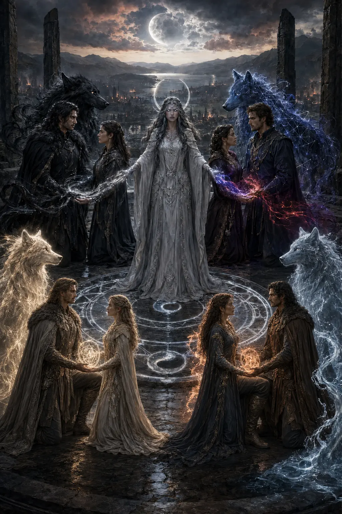

World 01 · Modern fantasy · 2030
Four Houses.
One buried history.
Werewolves live beside humanity in a hidden modern society of corporations, universities, old blood and laws whose original rites have been forgotten.
Open the atlas ↓The concealed world
Old blood.
Modern power.
The year is 2030. House authority moves through boardrooms, hospitals, private universities and guarded highways—not medieval courts. Beneath it all, instinct still remembers what history has buried.
- Population
- 20% werewolf
- Seat of rule
- Eldermere
- Ruling powers
- Four Houses

Creation · Religion · Buried history
The moon remembers
what law forgot.
Enter the illustrated world book: Lunaerie’s first blessing, the Night of Open Jaws, the Covenant of Eight, the Hollow Crowns and the hidden inheritance moving through 2030.
Open the lore archive ↗Political atlas · Public record
The four
territories.
Blackbriar rules the inland heart. Viremont guards the western sea. Fairborne holds the southern valleys. Solas remains quiet in the volcanic east.
The ruling bloodlines
Choose a
House archive.
Each House carries a gift, a political identity and a history that survived more faithfully as law than truth.
The Alpha King’s House. Forested, severe and administratively powerful.
Navy-and-gold strategists built on commerce, persuasion and controlled access.
Preservation, medicine and immaculate institutions over a fractured claim.
A dormant House whose abandoned seat recognises no living owner.
Begin exploring
Places with
stories inside.
The first complete location archives belong to Blackbriar and Viremont. Every plate opens at its original HD resolution.

Archive protocol
Some truths remain
off the public shelves.
Bot-specific endings, unrevealed bloodlines and author-only succession records are deliberately excluded from this public atlas. A beautiful archive is still allowed to keep a secret.